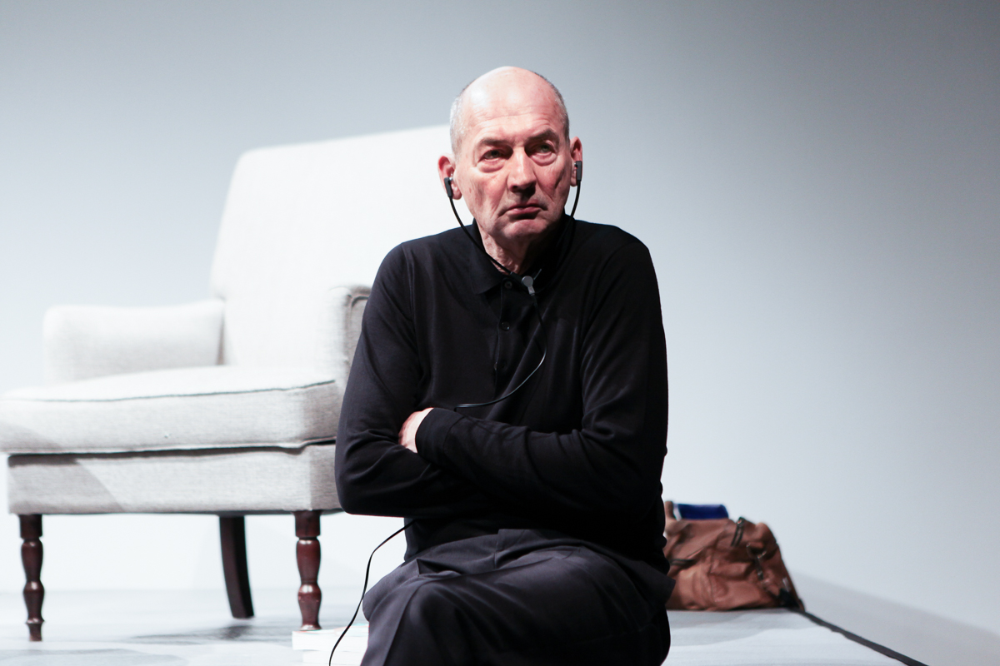

Remment Lucas Koolhaas (Dutch pronunciation: [rɛm koːlɦaːs]; born 17 November 1944) is a Dutch architect, architectural theorist, urbanist and Professor in Practice of Architecture and Urban Design at the Graduate School of Design at Harvard University. He is often cited as a representative of Deconstructivism and is the author of Delirious New York: A Retroactive Manifesto for Manhattan.
He is seen by some as one of the truly significant architectural thinkers and urbanists of his generation, by others as a self-important iconoclast. In 2000, Rem Koolhaas won the Pritzker Prize. In 2008, Time put him in their top 100 of The World's Most Influential People. He was elected to the American Philosophical Society in 2014.